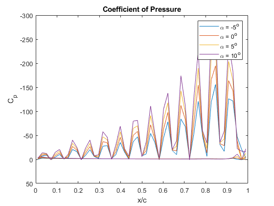
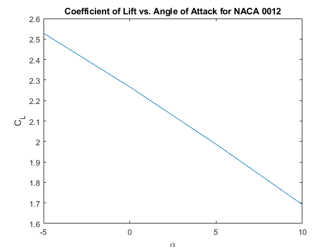
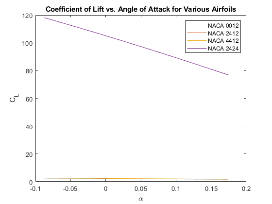

ASEN 3111 - Computational assignment 3 - Main
Assigns a list of points for an airfoil and flow conditions, then computes the coefficient of lift according to the vortex panel method. Author: Grace Edwards Date: May 21 2020 Followed by a whole lot of waffling and finished on the evening of 6/1/2020
clear all; close all; clc; % Problem 2 % Set up the variables for the simple NACA 0012 [x, y] = NACA_airfoils(0, 0, .12, 1, 100); alpha = [-5 0 5 10]; % degrees alpha_rad = alpha*pi/180; V_inf = 20; % m/s for i = 1:length(alpha) c_l(i) = Vortex_Panel(x,y, V_inf, alpha_rad(i), true); % For some reason this function will not converge properly. The more % panels, the higher the coefficient of lift is. So I have picked 100 % panels as a good enough number and moved on. So it's definitely not % correct and I'm sorry. end % Add a legend to the plot already created by the vortex panel function figure(1) legend('\alpha = -5^o', '\alpha = 0^o', '\alpha = 5^o', '\alpha = 10^o'); % Plot the various angles of attack for the 0012 figure(2) plot(alpha, c_l); hold on; title('Coefficient of Lift vs. Angle of Attack for NACA 0012'); xlabel('\alpha'); ylabel('C_L'); % Next, varying the airfoils for Problem 3 % 0012 alpha = linspace(-5, 10, 50)*pi/180; for i = 1:length(alpha) c_l(i) = Vortex_Panel(x,y, V_inf, alpha(i), false); end figure(3) plot(alpha, c_l); hold on; title('Coefficient of Lift vs. Angle of Attack for Various Airfoils'); xlabel('\alpha'); ylabel('C_L'); % 2412 [x, y] = NACA_airfoils(0.02, 0.4, .12, 1, 100); for i = 1:length(alpha) c_l(i) = Vortex_Panel(x,y, V_inf, alpha(i), false); end plot(alpha, c_l); % 4412 [x, y] = NACA_airfoils(0.04, 0.4, .12, 1, 100); for i = 1:length(alpha) c_l(i) = Vortex_Panel(x,y, V_inf, alpha(i), false); end plot(alpha, c_l); % 2424 [x, y] = NACA_airfoils(0.02, 0.4, .24, 1, 100); for i = 1:length(alpha) c_l(i) = Vortex_Panel(x,y, V_inf, alpha(i), false); end plot(alpha, c_l); % Legend legend('NACA 0012', 'NACA 2412', 'NACA 4412', 'NACA 2424'); % None of this makes any sense. The coefficient of lift is negative. The % lift curve slope is negative. The airfoils converge onto two lines % independent of one another.  